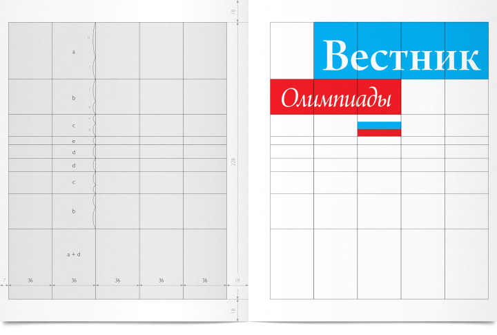
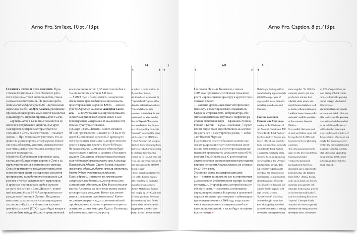
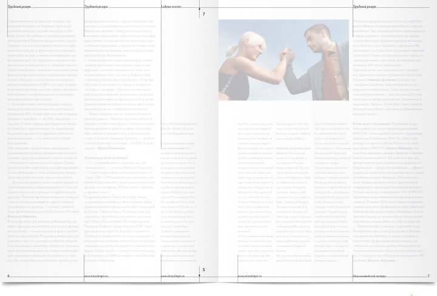
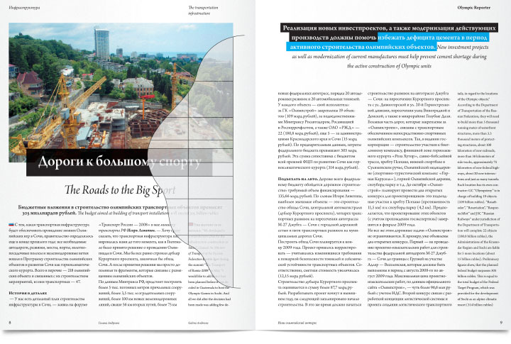

| Дизайн-студия | nfrjtdjnbvz.name |
Блог | |||||
| Журнал «Вестник Олимпиады» | |||||||
| Суть вопроса | Модульная сетка |
Типографика | Верстка | Натурально | |||
По горизонтали область набора разделена на пять колонок, по вертикали — на прямоугольники, высоты которых заданы в пропорциях «золотого сечения». |
 |
Логотип журнала опирается на направляющие сетки. В логотипе используется та же гарнитура, что и во всём журнале. |
|||||
Русский текст верстается десятым кеглем в колонке двойной ширины, а английский — восьмым в одинарной. Интерлиньяж одинаковый — 13 пунктов. Это решение позволяет разделить информацинные потоки, не ограничиваясь жесткими рамками какого-либо шаблона. |
 |
||||||
Все колонэлементы размещаются на верхнем и нижнем полях. Колонцифра ставится внизу с привязкой ко внешней границе наборной полосы. Колонтитулы позиционируются свободно в горизонтальном направлении, с привязкой к вертикальным направляющим сетки, выключаются влево. |
 |
||||||
По вертикали иллюстрации и плашки заголовков позиционируются с привязкой к линиям сетки. Заголовок, лид и цитаты выключаются по центру и выравниваются относительно полосы набора. |
 |
||||||
| © Е. Арутюнов, 2007—2011 gjxnf@nfrjtdjnbvz.name |
|||||||